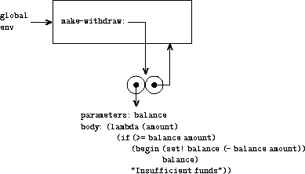
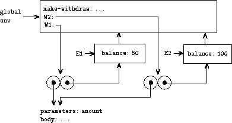

|
Quando introduzimos procedimentos compostos no capítulo 1, usamos o modelo de avaliação de substituição (seção 1.1.5) para definir o que significa aplicar um procedimento aos argumentos:
Uma vez que admitimos a atribuição em nossa linguagem de programação, essa definição não é mais adequada. Em particular, a seção 3.1.3 argumentou que, na presença de atribuição, uma variável não pode mais ser considerada apenas um nome para um valor. Em vez disso, uma variável deve, de alguma forma, designar um “local” no qual os valores podem ser armazenados. Em nosso novo modelo de avaliação, esses locais serão mantidos em estruturas chamadas ambientes.
Um ambiente é uma sequência de quadros. Cada quadro é uma tabela (possivelmente vazia) de ligações, que associam nomes de variáveis aos seus valores correspondentes. (Um único quadro pode conter no máximo uma ligação para qualquer variável). Cada quadro também possui um ponteiro para seu ambiente incluso, a menos que, para fins de discussão, o quadro é considerado global. O valor de uma variável em relação a um ambiente é o valor fornecido pela ligação da variável no primeiro quadro do ambiente que contém uma ligação para essa variável. Se nenhum quadro na sequência especificar uma ligação para a variável, é dito que a variável é não ligada no ambiente.
A figura 3.1 mostra uma estrutura de ambiente simples que consiste em três quadros, rotulados I, II e III. No diagrama, A, B, C e D são ponteiros para ambientes. C e D apontam para o mesmo ambiente. As variáveis z e x estão ligadas no quadro II, enquanto y e x estão ligadas no quadro I. O valor de x no ambiente D é 3. O valor de x em relação ao ambiente B também é 3. Isso é determinado da seguinte forma: Examinamos o primeiro quadro na sequência (quadro III) e não encontramos uma ligação para x; portanto, prosseguimos para o ambiente envolvente D e encontramos a ligação no quadro I. Por outro lado, o valor de x no ambiente A é 7, pois o primeiro quadro na sequência (quadro II) contém uma ligação de x a 7. Com relação ao ambiente A, a ligação de x a 7 no quadro II é considerada asombrear a ligação de x a 3 no quadro I.
O ambiente é crucial para o processo de avaliação, pois determina o contexto em que uma expressão deve ser avaliada. De fato, pode-se dizer que expressões em uma linguagem de programação não possuem, por si só, nenhum significado. Em vez disso, uma expressão adquire um significado apenas em relação a algum ambiente em que é avaliada. Mesmo a interpretação de uma expressão tão direta quanto (+ 1 1) depende do entendimento de que alguém opera em um contexto em que + é o símbolo da adição. Assim, em nosso modelo de avaliação, sempre falaremos em avaliar uma expressão em relação a algum ambiente. Para descrever interações com o interpretador, suporemos que exista um ambiente global, consistindo em um único quadro (sem ambiente fechado) que inclua valores para os símbolos associados aos procedimentos primitivos. Por exemplo, a ideia de que + é o símbolo para adição é capturada ao dizer que o símbolo + está ligado no ambiente global ao procedimento de adição primitivo.
A especificação geral de como o interpretador avalia uma combinação permanece a mesma de quando a introduzimos pela primeira vez na seção 1.1.3:
1. Avalie as subexpressões da combinação.12
2. Aplique o valor da subexpressão do operador aos valores das subexpressões do operando.
O modelo de avaliação do ambiente substitui o modelo de substituição ao especificar o que significa aplicar um procedimento composto aos argumentos.
No modelo de avaliação do ambiente, um procedimento é sempre um par que consiste em algum código e um ponteiro para um ambiente. Os procedimentos são criados apenas de uma maneira: avaliando uma expressão lambda. Isso produz um procedimento cujo código é obtido a partir do texto da expressão lambda e cujo ambiente é o ambiente no qual a expressão lambda foi avaliada para produzir o procedimento. Por exemplo, considere a definição do procedimento
avaliados no ambiente global. A sintaxe de definição de procedimento é apenas um açúcar sintático para uma expressão implícita lambda subjacente. Teria sido equivalente a ter usado
(define square
(lambda (x) (* x x)))
que avalia (lambda (x) (* x x)) e liga square ao valor resultante, tudo no ambiente global.
A figura 3.2 mostra o resultado da avaliação dessa expressão define. O objeto do procedimento é um par cujo código especifica que o procedimento possui um parâmetro formal, ou seja, x, e um corpo do procedimento (* x x). A parte do ambiente do procedimento é um ponteiro para o ambiente global, pois é o ambiente no qual a expressão lambda foi avaliada para produzir o procedimento. Uma nova ligação, que associa o objeto de procedimento ao símbolo square, foi adicionada ao quadro global. Em geral, define cria definições adicionando ligações a quadros.
 |
Agora que vimos como os procedimentos são criados, podemos descrever como os procedimentos são aplicados. O modelo de ambiente especifica: Para aplicar um procedimento aos argumentos, crie um novo ambiente que contenha um quadro que ligue os parâmetros aos valores dos argumentos. O ambiente anexo desse quadro é o ambiente especificado pelo procedimento. Agora, dentro desse novo ambiente, avalie o corpo do procedimento.
Para mostrar como essa regra é seguida, a figura 3.3 ilustra a estrutura do ambiente criada avaliando a expressão (square 5) no ambiente global, onde square é o procedimento gerado na figura 3.2. A aplicação do procedimento resulta na criação de um novo ambiente, rotulado E1 na figura, que começa com um quadro no qual x, o parâmetro formal do procedimento, está ligado ao argumento 5. O ponteiro que sobe desse quadro mostra que o ambiente envolvente do quadro é o ambiente global. O ambiente global é escolhido aqui, pois esse é o ambiente indicado como parte do objeto de procedimento square. No E1, avaliamos o corpo do procedimento, (* x x). Como o valor de x em E1 é 5, o resultado é (* 5 5) ou 25.
 |
O modelo de ambiente da aplicação de procedimento pode ser resumido por duas regras:
Também especificamos que a definição de um símbolo usando define cria uma ligação no quadro do ambiente atual e atribui ao símbolo o valor indicado.13 Finalmente, especificamos o comportamento de set!, a operação que nos forçou a introduzir o modelo de ambiente em primeiro lugar. Avaliando a expressão (set! <variable> <value>) em algum ambiente localiza a ligação da variável no ambiente e altera essa ligação para indicar o novo valor. Ou seja, encontra-se o primeiro quadro no ambiente que contém uma ligação para a variável e modifica esse quadro. Se a variável não estiver ligada no ambiente, set! sinaliza um erro.
Essas regras de avaliação, embora consideravelmente mais complexas que o modelo de substituição, ainda são razoavelmente diretas. Além disso, o modelo de avaliação, embora abstrato, fornece uma descrição correta de como o interpretador avalia expressões. No capítulo 4, veremos como esse modelo pode servir como um plano para a implementação de um interpretador ativo. As seções a seguir elaboram os detalhes do modelo analisando alguns programas ilustrativos.
Quando introduzimos o modelo de substituição na seção 1.1.5, mostramos como a combinação (f 5) é avaliada para 136, considerando as seguintes definições de procedimento:
(define (square x)
(* x x))
(define (sum-of-squares x y)
(+ (square x) (square y)))
(define (f a)
(sum-of-squares (+ a 1) (* a 2)))
Podemos analisar o mesmo exemplo usando o modelo de ambiente. A figura 3.4 mostra os três objetos de procedimento criados pela avaliação das definições de f, square e sum-of-squares no ambiente global. Cada objeto de procedimento consiste em algum código, com um ponteiro para o ambiente global.
 |
Na figura 3.5, vemos a estrutura do ambiente criada avaliando a expressão (f 5). A chamada para f cria um novo ambiente E1 começando com um quadro no qual a, o parâmetro formal de f, está ligado ao argumento 5. No E1, avaliamos o corpo de f:
(sum-of-squares (+ a 1) (* a 2))
 |
Para avaliar essa combinação, primeiro avaliamos as subexpressões. A primeira subexpressão, sum-of-squares, possui um valor que é um objeto de procedimento. (Observe como esse valor é encontrado: primeiro examinamos o primeiro quadro de E1, que não contém nenhuma ligação para sum-of-squares. Em seguida, prosseguimos para o ambiente anexo, ou seja, o ambiente global, e encontramos a ligação mostrada na figura 3.4). As outras duas subexpressões são avaliadas aplicando as operações primitivas + e * para avaliar as duas combinações (+ a 1) e (* a 2) para obter 6 e 10, respectivamente.
Agora aplicamos o objeto de procedimento sum-of-squares aos argumentos 6 e 10. Isso resulta em um novo ambiente E2, no qual os parâmetros formais x e y estão ligados aos argumentos. No E2, avaliamos a combinação (+ (square x) (square y)). Isso nos leva a avaliar (square x), onde square é encontrado no quadro global e x é 6. Mais uma vez, montamos um novo ambiente, E3, no qual x é ligado a 6 e, dentro disso, avaliamos o corpo do square, que é (* x x). Também como parte da aplicação da sum-of-squares, devemos avaliar a subexpressão (square y), onde y é 10. Esta segunda chamada para square cria outro ambiente, E4, no qual x, o parâmetro formal de square, está ligado a 10. E no E4 devemos avaliar (* x x).
O ponto importante a observar é que cada chamada para square cria um novo ambiente contendo uma ligação para x. Podemos ver aqui como os diferentes quadros servem para manter separadas as diferentes variáveis locais, todas nomeadas x. Observe que cada quadro criado pelo square aponta para o ambiente global, pois esse é o ambiente indicado pelo objeto do procedimento square.
Depois que as subexpressões são avaliadas, os resultados são retornados. Os valores gerados pelas duas chamadas para square são adicionados pela sum-of-squares e esse resultado é retornado por f. Como nosso foco aqui é nas estruturas do ambiente, não nos concentraremos em como esses valores retornados são transmitidos de uma chamada para outra; no entanto, esse também é um aspecto importante do processo de avaliação e retornaremos a ele em detalhes no capítulo 5.
Exercício 3.9. Na seção 1.2.1, usamos o modelo de substituição para analisar dois procedimentos para calcular fatoriais, uma versão recursiva
(define (factorial n)
(if (= n 1)
1
(* n (factorial (- n 1)))))
e uma versão iterativa
(define (factorial n)
(fact-iter 1 1 n))
(define (fact-iter product counter max-count)
(if (> counter max-count)
product
(fact-iter (* counter product)
(+ counter 1)
max-count)))
Mostre as estruturas do ambiente criadas avaliando (factorial 6) usando cada versão do procedimento factorial.14
Podemos recorrer ao modelo de ambiente para ver como os procedimentos e a atribuição podem ser usados para representar objetos com o estado local. Como exemplo, considere o “processador de retirada” da seção 3.1.1 criado chamando o procedimento
(define (make-withdraw balance)
(lambda (amount)
(if (>= balance amount)
(begin (set! balance (- balance amount))
balance)
"Insufficient funds")))
Descreveremos a avaliação de
(define W1 (make-withdraw 100))
Seguido por
(W1 50)
50
A figura 3.6 mostra o resultado da definição do procedimento make-withdraw no ambiente global. Isso produz um objeto de procedimento que contém um ponteiro para o ambiente global. Até agora, isso não é diferente dos exemplos que já vimos, exceto que o corpo do procedimento é ele próprio uma expressão lambda.
|  |
A parte interessante da computação acontece quando aplicamos o procedimento make-withdraw a um argumento:
(define W1 (make-withdraw 100))
Começamos, como sempre, configurando um ambiente E1 no qual o parâmetro formal balance está ligado ao argumento 100. Nesse ambiente, avaliamos o corpo de make-withdraw, ou seja, a expressão lambda. Isso constrói um novo objeto de procedimento, cujo código é especificado pelo lambda e cujo ambiente é E1, o ambiente no qual o lambda foi avaliado para produzir o procedimento. O objeto de procedimento resultante é o valor retornado pela chamada para make-withdraw. Isso está ligado a W1 no ambiente global, pois define em si é avaliado no ambiente global. A figura 3.7 mostra a estrutura do ambiente resultante.
 |
Agora podemos analisar o que acontece quando W1 é aplicado a um argumento:
(W1 50)
50
Começamos construindo um quadro no qual amount, o parâmetro formal de W1, está ligado ao argumento 50. O ponto crucial a observar é que esse quadro possui como ambiente anexo não o ambiente global, mas o ambiente E1, pois esse é o ambiente especificado pelo objeto de procedimento W1. Nesse novo ambiente, avaliamos o corpo do procedimento:
(if (>= balance amount)
(begin (set! balance (- balance amount))
balance)
"Insufficient funds")
A estrutura do ambiente resultante é mostrada na figura 3.8. A expressão que é avaliada faz referência a amount e balance. Amount será encontrada no primeiro quadro do ambiente, enquanto balance será encontrado seguindo o ponteiro do ambiente incluso para E1.
 |
Quando o set! é executado, a ligação do balance no E1 é alterada. Na conclusão da chamada para W1, o balance é 50, e o quadro que contém o balance ainda é apontado pelo objeto de procedimento W1. O quadro que liga a amount (na qual executamos o código que alterou o balance) não é mais relevante, pois a chamada de procedimento que a construiu foi encerrada e não há ponteiros para esse quadro de outras partes do ambiente. A próxima vez que W1 for chamado, isso criará um novo quadro que liga amount e cujo ambiente envolvente é E1. Vemos que E1 serve como o “local” que contém a variável de estado local para o objeto de procedimento W1. A figura 3.9 mostra a situação após a chamada para W1.
 |
Observe o que acontece quando criamos um segundo objeto “retirar” fazendo outra chamada para make-withdraw:
(define W2 (make-withdraw 100))
Isso produz a estrutura do ambiente da figura 3.10, que mostra que W2 é um objeto de procedimento, ou seja, um par com algum código e um ambiente. O ambiente E2 para W2 foi criado pela chamada para make-withdraw. Ele contém um quadro com sua própria ligação local para balance. Por outro lado, W1 e W2 possuem o mesmo código: o código especificado pela expressão lambda no corpo de make-withdraw.15 Vemos aqui por que W1 e W2 se comportam como objetos independentes. As chamadas para W1 fazem referência à variável de estado balance armazenada em E1, enquanto as chamadas para W2 fazem referência a balance armazenado em E2. Portanto, alterações no estado local de um objeto não afetam o outro objeto.
|  |
Exercício 3.10. No procedimento make-withdraw, a variável local balance é criada como um parâmetro de make-withdraw. Também podemos criar a variável de estado local explicitamente, usando let, da seguinte maneira:
(define (make-withdraw initial-amount)
(let ((balance initial-amount))
(lambda (amount)
(if (>= balance amount)
(begin (set! balance (- balance amount))
balance)
"Insufficient funds"))))
Lembre-se da seção 1.3.2 que let é simplesmente açúcar sintático para uma chamada de procedimento:
(let ((<var> <exp>)) <body>)
é interpretado como uma sintaxe alternativa para
((lambda (<var>) <body>) <exp>)
Use o modelo de ambiente para analisar esta versão alternativa do make-withdraw, desenhando figuras como as acima para ilustrar as interações
(define W1 (make-withdraw 100))
(W1 50)
(define W2 (make-withdraw 100))
Mostre que as duas versões do make-withdraw criam objetos com o mesmo comportamento. Como as estruturas do ambiente diferem nas duas versões?
A seção 1.1.8 introduziu a ideia de que os procedimentos podem ter definições internas, levando a uma estrutura de blocos, como no procedimento a seguir para calcular raízes quadradas:
(define (sqrt x)
(define (good-enough? guess)
(< (abs (- (square guess) x)) 0.001))
(define (improve guess)
(average guess (/ x guess)))
(define (sqrt-iter guess)
(if (good-enough? guess)
guess
(sqrt-iter (improve guess))))
(sqrt-iter 1.0))
Agora podemos usar o modelo de ambiente para ver por que essas definições internas se comportam conforme desejado. A figura 3.11 mostra o ponto na avaliação da expressão (sqrt 2) em que o procedimento interno good-enough? foi chamado pela primeira vez tempo com guess igual a 1.
 |
Observe a estrutura do ambiente. Sqrt é um símbolo no ambiente global ligado a um objeto de procedimento cujo ambiente associado é o ambiente global. Quando sqrt foi chamado, um novo ambiente E1 foi formado, subordinado ao ambiente global, no qual o parâmetro x está ligado a 2. O corpo de sqrt foi então avaliado em E1. Como a primeira expressão no corpo de sqrt é
(define (good-enough? guess)
(< (abs (- (square guess) x)) 0.001))
avaliar esta expressão definiu o procedimento good-enough? no ambiente E1. Para ser mais preciso, o símbolo good-enough? foi adicionado ao primeiro quadro de E1, ligado a um objeto de procedimento cujo ambiente associado é E1. Da mesma forma, improve e sqrt-iter foram definidos como procedimentos no E1. Por questões de concisão, a figura 3.11 mostra apenas o objeto de procedimento para good-enough?.
Após a definição dos procedimentos locais, a expressão (sqrt-iter 1.0) foi avaliada, ainda no ambiente E1. Portanto, o objeto de procedimento ligado ao sqrt-iter no E1 foi chamado com 1 como argumento. Isso criou um ambiente E2 no qual guess, o parâmetro de sqrt-iter, está ligado a 1. Sqrt-iter, por sua vez, chamou good-enough? com o valor de guess (do E2) como argumento para good-enough?. Isso configurou outro ambiente, o E3, no qual guess (o parâmetro good-enough?) está ligado a 1. Embora sqrt-iter e good-enough? ambos possuam um parâmetro chamado guess, essas são duas variáveis locais distintas localizadas em quadros diferentes. Além disso, o E2 e o E3 possuem o E1 como ambiente envolvente, pois os procedimentos sqrt-iter e good-enough? possuem E1 como parte do ambiente. Uma consequência disso é que o símbolo x que aparece no corpo de good-enough? fará referência à ligação de x que aparece em E1, ou seja, o valor de x com o qual o procedimento original sqrt foi chamado. O modelo de ambiente explica as duas principais propriedades que tornam as definições de procedimentos locais uma técnica útil para modularizar programas:
Exercício 3.11. Na seção 3.2.3 vimos como o modelo de ambiente descreve o comportamento dos procedimentos com o estado local. Agora vimos como as definições internas funcionam. Um procedimento típico de passagem de mensagens contém esses dois aspectos. Considere o procedimento de conta bancária da seção 3.1.1:
(define (make-account balance)
(define (withdraw amount)
(if (>= balance amount)
(begin (set! balance (- balance amount))
balance)
"Insufficient funds"))
(define (deposit amount)
(set! balance (+ balance amount))
balance)
(define (dispatch m)
(cond ((eq? m 'withdraw) withdraw)
((eq? m 'deposit) deposit)
(else (error "Unknown request -- MAKE-ACCOUNT"
m))))
dispatch)
Mostre a estrutura do ambiente gerada pela sequência de interações
(define acc (make-account 50))
((acc 'deposit) 40)
90
((acc 'withdraw) 60)
30
Onde é mantido o estado local para acc? Suponha que definamos outra conta
(define acc2 (make-account 100))
Como os estados locais das duas contas são mantidos distintos? Quais partes da estrutura do ambiente são compartilhadas entre acc e acc2?
12 A atribuição introduz uma sutileza na etapa 1 da regra de avaliação. Conforme mostrado no exercício 3.8, a presença de atribuição nos permite escrever expressões que produzirão valores diferentes dependendo da ordem em que as subexpressões em uma combinação são avaliadas. Assim, para ser mais preciso, devemos especificar uma ordem de avaliação na etapa 1 (por exemplo, da esquerda para a direita ou da direita para a esquerda). No entanto, essa ordem sempre deve ser considerado um detalhe de implementação e nunca se deve escrever programas que dependam de alguma ordem específica. Por exemplo, um compilador sofisticado pode otimizar um programa variando a ordem em que as subexpressões são avaliadas.
13 Se já houver uma ligação para a variável no quadro atual, a ligação será alterada. Isso é conveniente, pois permite a redefinição de símbolos; no entanto, também significa que define pode ser usado para alterar valores, e isso traz à tona os problemas de atribuição sem usar explicitamente set!. Por esse motivo, algumas pessoas preferem redefinições de símbolos existentes para sinalizar erros ou avisos.
14 O modelo de ambiente não esclarecerá nossa afirmação na seção 1.2.1 de que o interpretador pode executar um procedimento como fact-iter em uma quantidade constante de espaço usando recursão de cauda. Discutiremos a recursão de cauda quando lidamos com a estrutura de controle do interpretador na seção 5.4.
15 Se W1 e W2 compartilham o mesmo código físico armazenado no computador, ou se cada um deles mantém uma cópia do código, é um detalhe da implementação. Para o interpretador que implementamos no capítulo 4, o código é de fato compartilhado.